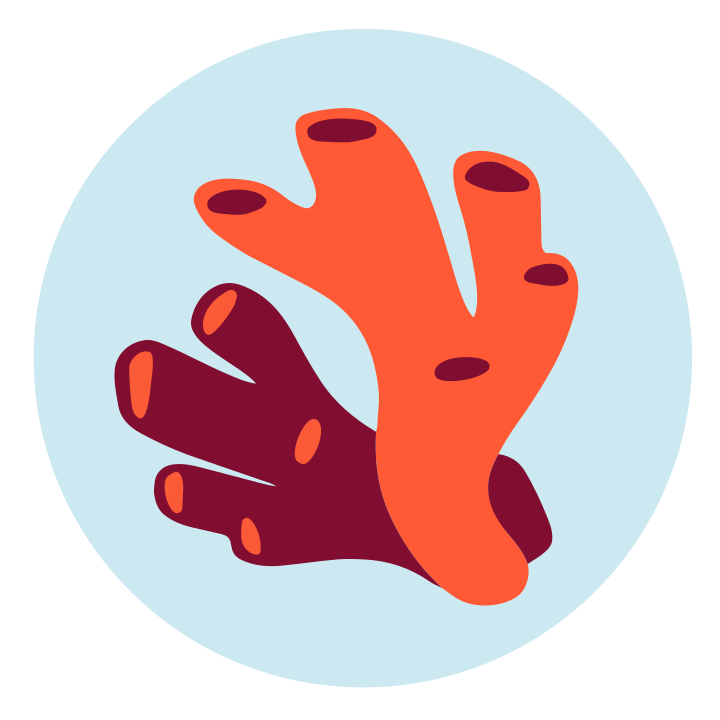

One year of Hiding Nemo
Time flies! One year ago, I decided to go independent, and announced the creation of Hiding Nemo, a consultancy focusing on privacy-enhancing technology.

This seems like a good time to take stock at how things are going, and share some of what I've learned making the switch to independent work.
Business
tl;dr: Business is going well!
I made two hypotheses when I started Hiding Nemo: there is demand for consulting services about anonymization and re-identification risk analysis, and I'm sufficiently well-known that organizations will find me and want to hire me for this. It was far from obvious a year ago, and felt like a shot in the dark. I didn't know of other people pursuing the same angle, so I had no idea whether there was a market for this. And it was hard to guess whether my personal brand would actually translate to business.
The great news is that both hypotheses seem to be true. There is demand, and people find me when they need my expertise. I earn less than if I was working full-time in a big tech company, but more than enough to live comfortably, even in a city as expensive as Zürich.
A lot of Hiding Nemo's revenue came from a single client, so it's unclear what business will be like once this major project is over. But even without this client, my other contracts would still have been enough for me to pay the bills. So I'm optimistic!
Projects
tl;dr: No two projects nor clients look alike. This is fun!
When I made the Hiding Nemo website, I tried to make my "unique selling proposition" clear: the focus on privacy-enhancing tech, anonymization, and re-identification risk analysis is a major differentiator compared to other privacy consultancies. But I gave a wide range of options regarding the type of work I could do; I had no idea what would be most needed. And I had worn many hats in my career so far: providing strategic guidance, designing anonymization solutions, performing code audits, mentoring junior folks working on research projects, helping with technical communication…
So far, it seems like people need many different things. In the past year, I've done all the types of work listed above, and more. There's also no clear pattern emerging when it comes to who hires me: my clients include tiny startups, Fortune 500 companies, nonprofits, and public entities. I've worked on differential privacy deployments, on anonymization use cases where formal privacy isn't an option, and on projects that involved multiple kinds of privacy tech.
It's a lot of fun to see such different parts of the world, and work with folks with wildly different backgrounds and goals. Work is exciting and challenging. I'm learning a lot.
On the other hand, when I started Hiding Nemo, I had a hopeful thought: maybe I would discover that many different people all have similar problems, which could be the starting point for a product company… This has not happened yet. Maybe it will in the future?
Overhead
tl;dr: Non-project work is not the most fun, but it's OK.
Independent consultants I've talked to before starting Hiding Nemo said the same thing: project work is fun, but the rest can be a big pain. Marketing, administrative tasks, business development, accounting, contract negotiations… I had no idea how these would be for me: my experience in such things was minimal or nonexistent.
Some tasks are indeed very annoying (accounting, admin stuff) or very stressful (negotiating legal terms in contracts). I'm cautiously optimistic that it might get better with time, once it becomes routine. If business continues to go well, I could also more aggressively subcontract some of this work1.
Marketing is alright. I push myself to blog and to post on LinkedIn a little more than before, but it's not a huge chore. Business development is kind of fun. Talking to people about their privacy problems, providing some initial thoughts, and proposing potential ways forward… It's not that far from the kind of work I did before as a privacy engineer. The only difference is that I now structure solutions as paid engagements, and I have to be a bit strategic about what to share in exploratory meetings vs. in billable time. It doesn't come naturally to me, but it definitely gets easier over time.
I suspect that marketing & business development are reasonably pleasant tasks because business is going well2. If I had to hustle a lot more to find clients, and struggle to pay the bills, I would probably find this a lot more difficult and stressful.
Emotions
tl;dr: It hasn't always been easy, but I'm happy overall!
I went through a few challenging periods over the last year. The most difficult part was probably when I didn't have any work to do. Before, I thought "whenever I don't have a project going on, I will simply write blog posts and do some fun research!". But actually, idleness did something to my brain that made me unable to do much at all. First, it was obviously stressful to not know whether things would work out financially3. But more surprisingly (and worryingly), I would spend hours at my desk every day and basically do no progress on anything.
It got better once I started pretending that my job was to contribute to open-source software: it's easier to get lost in coding and progress is more obvious, both of which did good things to my mental state. Shortly thereafter, a new project started and I've been pretty busy ever since. Now I'm almost looking forward to a quieter time again, to see how well I can deal with it (and finish the thing I was working on).
Conversely, the busy periods can be very stressful. I try to plan carefully to not end up with too much to do at the same time, but then some projects get delayed, and all my planning goes out of the window. Also, being 100% responsible for delivering all the work I promised as an independent is more stressful than at a company, where there is always the option to talk to my manager to re-prioritize stuff if needed4. Outside circumstances like health issues or life events are also more stressful when nobody can cover for me.
Overall though, I'm very happy with the new role. The tech industry has taken a sharp turn for the worse5, but I'm mostly unaffected by it6. I'm making meaningful connections in diverse industries, gaining credibility, working on impactful projects with lovely folks. I feel very fortunate, and extremely grateful7.
No longer relying on an employer to make a living is super empowering. My clients seem very happy with my work, which feels great. I sometimes have long work weeks, but overall I maintained a reasonable work-life balance. I'm learning a lot. And most important of all, I'm having fun!
Future
I'll keep doing this for some time!
If business keeps going well, I'll try to rely more on subcontracting; I'm making the first steps in this direction already. I'm still very far from considering hiring anyone, but finding collaborators to tackle specific projects together sparks joy, so I definitely want to explore it.
I'm looking forward to seeing what comes next!
-
Though there's a limit to that. Lawyers never say "do this, don't do that". They say "this is risky, this is slightly less risky", and then I have to make a judgment call — this is the part that is both the most stressful, and also impossible to delegate. ↩
-
There is probably an impact in the other direction, but it's hard to quantify, and likely not huge. I do zero cold outreach. When I ask prospective clients how they heard about me, the three main sources are recommendations from other privacy folks (if that's you, thank you so much ♥), past work I did, or older blog posts. ↩
-
Everyone tells you that it's very normal to not generate much business at the beginning, and that sales discussions are slow and unpredictable. So rationally, I was expecting all that, and I had enough savings that I would have been OK for some time with little to no income. Nonetheless, the uncertainty was difficult to deal with. ↩
-
I'm not saying this is easy; it was a very hard skill to learn earlier in my career. ↩
-
I went independent just in time to avoid the whole "you have to use AI daily and we will count your tokens" tech industry nonsense. I wish I could say that I saw it coming, but the good timing is sheer luck. ↩
-
I think that a big part of the value I provide is for my clients to be able to say "we talked to a recognized expert, implemented his recommendations, and he confirmed that the result provides a high level of protection". They couldn't get this from a chatbot. (Also, chatbots often give bad advice on privacy topics, or write unsafe anonymization software. But that's another subject, and may change in the future.) ↩
-
Let's be more specific here. I'm grateful to all those who helped me market myself. I'm super thankful to mandy brown for the wonderful coaching, which helped me make the big jump into the unknown, and navigate the difficult beginnings. And I'm extra grateful to all those who trusted me with their business, or recommended me to others. ↩